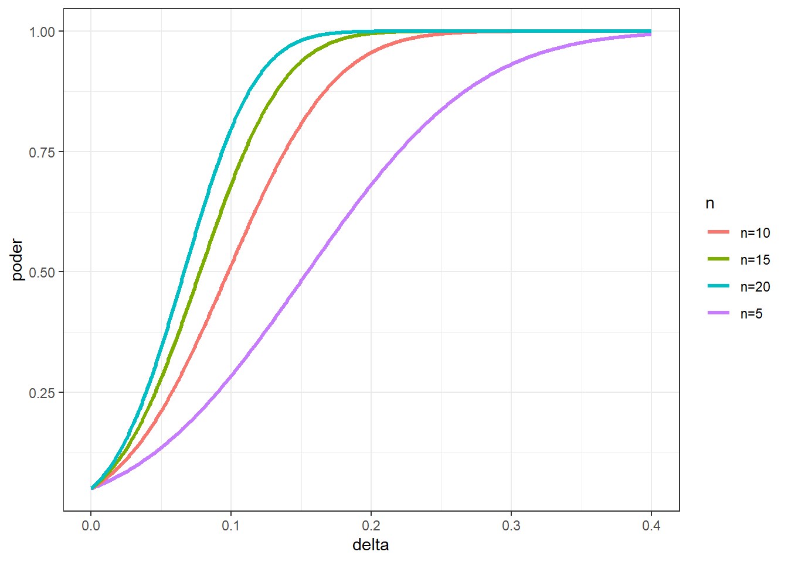

Min. 1st Qu. Median Mean 3rd Qu. Max.
10.50 10.69 10.78 10.78 10.88 11.12 Poder do teste e tamanho amostral
Poder do teste e tamanho amostral
Teste de hipóteses para média de uma amostra
Seja uma amostra de diâmetro de 12 furos obtidos por furação com broca em peça de aço inox ABNT 304.
Deseja-se averiguar se o diâmetro médio é maior que 10.6 mm.
Hipoteses: - H0: \(\mu\) = 10.6 (hipotese nula) - H1: \(\mu\) > 10.6 (hupotese alternativa)
Realizando o teste t.
One Sample t-test
data: diametro
t = 3.6262, df = 11, p-value = 0.001991
alternative hypothesis: true mean is greater than 10.6
95 percent confidence interval:
10.69178 Inf
sample estimates:
mean of x
10.78183 Qual o poder do teste para o exemplo?
Tomando os parâmetros do teste.
Poder do teste.
One-sample t test power calculation
n = 12
delta = 0.1818333
sd = 0.1737029
sig.level = 0.05
power = 0.959614
alternative = one.sidedQual o tamanho amostral necessário para um poder de 0.8?
É importante salientar que neste caso deve-se saber as estimativas do desvio-padrão e do efeito (diferença entre médias). Como não temos tais dados, antes de realizar no mínimo algumas observações, consideremos, a título de exemplo, a amostra anterior.
One-sample t test power calculation
n = 7.201793
delta = 0.1818333
sd = 0.1737029
sig.level = 0.05
power = 0.8
alternative = one.sidedCurva de poder do teste e tamanho amostral
Calculando o poder para uma sequência de valores.
Criando um data frame com os resultados de poder.
Plotando a curva.
Poder versus efeito
Sequência de valores para o efeito (ou deslocamento na media).
Poder para n=5.
Poder para n=10.
Poder para n=15.
Poder para n=20.
Data frame.
Curvas de poder do teste em função do efeito e tamanho amostral.

Outra forma de plotar.